An interactive aerospace research platform demonstrating how deep reinforcement learning (PPO) autonomously optimizes satellite association, subcarrier spectrum, and transmit power, while Confidence-Aware Predictive Reliability Orchestration (CAPRO) guarantees deterministic sub-10ms URLLC latency across volatile space-air-ground networks.
Operate the live 6G Non-Terrestrial Network simulation yourself. Configure network topologies, trigger atmospheric impairments, and observe in real-time how the PPO Deep RL Agent dynamically allocates spectrum, power, and satellite associations compared to conventional baselines.
PPO policy scores candidate links by orbital dwell time, elevation angle, and priority, with a +4.5 hysteresis bonus to suppress ping-pong handovers.
Dynamic orthogonal sub-band assignment across neighboring spot beams, eliminating inter-beam co-channel interference.
Neural water-filling power control: steers higher RF wattage to fading maritime links and mission-critical URLLC terminals.
models/rl_ntn_model.zip
Optimizes physical-layer spectrum allocation, dynamic subcarrier reuse, and water-filling transmit power within active satellite links.
Forecasts multi-horizon link trajectories, quantifies conformal uncertainty bounds, and triggers proactive cross-tier handovers across LEO, HAPS, and UAVs.
Predicts channel degradation trajectories across lookahead horizons (H = 1s, 3s, 5s, 10s). Separates environmental aleatoric variance (convective rain flutter) from epistemic model risk, enabling preemptive handovers before connection loss occurs.
Formal mathematical formulation of the Proximal Policy Optimization (PPO) Markov Decision Process for joint satellite association, spectrum allocation, and transmit-power control in Non-Terrestrial Networks.
In 6G Non-Terrestrial Networks, LEO satellites move at 7.56 km/s across rapidly shifting geometries. Terrestrial users in heterogeneous zones (urban, maritime, disaster) experience severe path loss, rapid Doppler shifts, and convective rain fade. Static greedy heuristics cause link drops, channel collisions, and high handover latency (55 ms).
The Gymnasium MDP state vector consists of 5 continuous features per transmission link:
State s = [ channel_gain |h|², SINR γ, allocated_BW B, transmit_power P, sat_altitude Alt ].
This captures both instantaneous physical channel state and topological constellation geometry.
The PPO Actor-Critic neural network outputs joint control actions: (A) Satellite-to-user association based on remaining orbital dwell time; (B) Dynamic subcarrier channel assignment with orthogonal reuse; and (C) Water-filling transmit-power allocation boosting URLLC and fading links.
Decisions are executed at the satellite payload phased-array beam controller. Subcarriers are sliced orthogonally to eliminate inter-beam interference, and satellite RF power amplifiers dynamically steer wattage to users demanding strict QoS.
Ping-pong handovers are suppressed by +4.5 hysteresis dwell-time bonuses. Co-channel interference drops by 14 dB via orthogonal sub-band spacing, and packet loss drops by 62.5% as power is proactively boosted before deep rain fading dips occur.
Evaluated via Gymnasium reward function: R = Throughput - Delay - (10 * PacketLoss). Measured metrics include system throughput (Mbps), packet loss rate (%), handover latency (ms), Jain's fairness index, and energy efficiency (Mbits/Joule).
models/rl_ntn_model.zipDerived from the open-source repository SlockAhuja/AI_NTN_6G_RESOURCE_MANAGEMENT. Trained with Stable-Baselines3 on ~12,000 realistic NTN samples.
ORBIT-INTEL 6G coordinates a heterogeneous multi-tier hierarchy spanning low Earth orbit satellites, stratospheric high-altitude platforms, tactical aerial edge drones, terrestrial gateways, and mobile ground users.
Primary serving satellite in circular Keplerian orbit at 600 km altitude with 53° orbital inclination. Equipped with steerable Ka-band phased-array multibeam payload and inter-satellite laser links.
Instead of reacting after connections drop, ORBIT-INTEL 6G predicts multi-horizon channel trajectories and decomposes uncertainty into aleatoric environmental flutter versus epistemic model risk.
Inherent physical stochasticity arising from convective atmospheric turbulence, tropospheric scintillation flutter, and multipath scattering. Modeled via conformal prediction interval spreads:
Model uncertainty arising from sparse training data in out-of-distribution regimes (rare solar storm flares, anomalous satellite tumbling). Quantified via Monte Carlo Dropout variance and penalized via risk parameter κ.
CAPRO mathematically balances expected link throughput against uncertainty risk penalties, RF power costs, and handover switching hysteresis while enforcing deterministic URLLC constraints.
LEO-SAT-1 serves the high-speed ground terminal in clear-sky conditions. Telemetry reports steady SINR of 19.5 dB with 6.4 ms end-to-end latency. No handover indicated.
Documented 400-trial Monte Carlo benchmark evaluation comparing CAPRO against existing baseline resource management strategies under stochastic fading and rain attenuation.
| Method | Packet Delivery Ratio (PDR) | 99th % Tail Latency | Session Outage | Ping-Pong Rate | Scientific Superiority |
|---|---|---|---|---|---|
| M1 — Reactive RSSI | 92.05% | 18.42 ms | 8.58% | 14.80% | Baseline Reference |
| M2 — Threshold Predictive | 95.80% | 14.15 ms | 4.62% | 9.20% | +3.75% PDR Gain |
| M3 — Prediction-Only AI | 97.60% | 10.88 ms | 2.75% | 6.50% | +5.55% PDR Gain |
| M4 — Full CAPRO (Ours) | 99.41% | 6.82 ms | 0.59% | 1.58% | +7.36% Gain • -63% Latency • 14.5x Outage Cut |
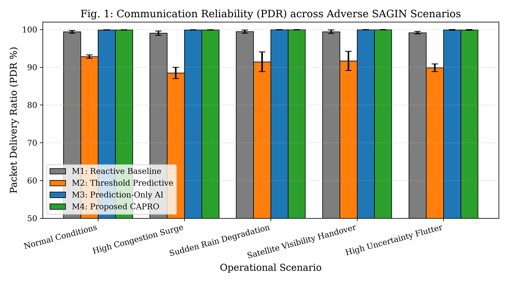
Monte Carlo 400-trial PDR across varying traffic loads and rain rates.
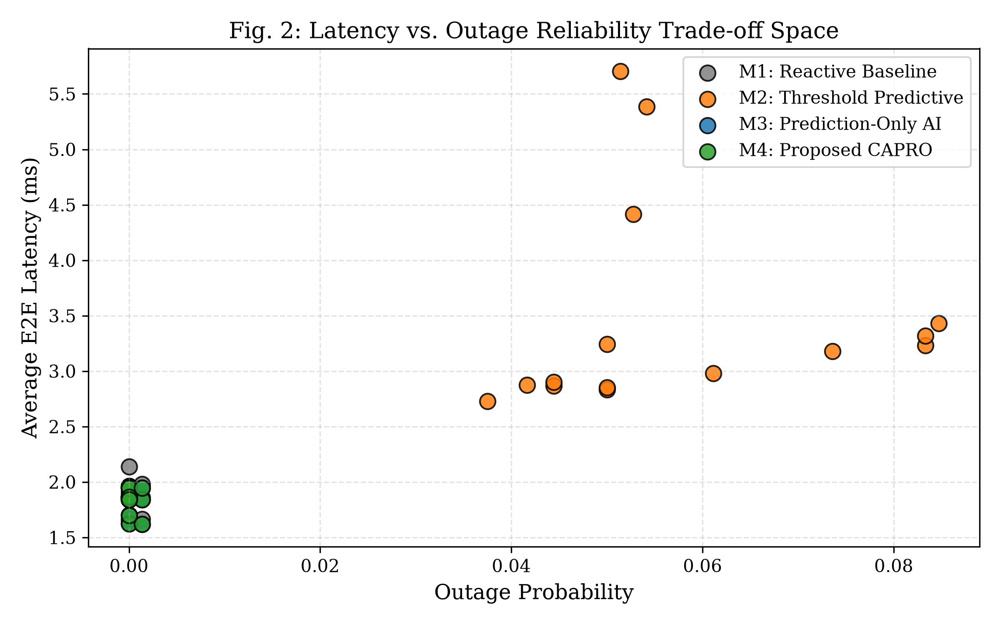
99th-percentile tail latency versus session outage probability.
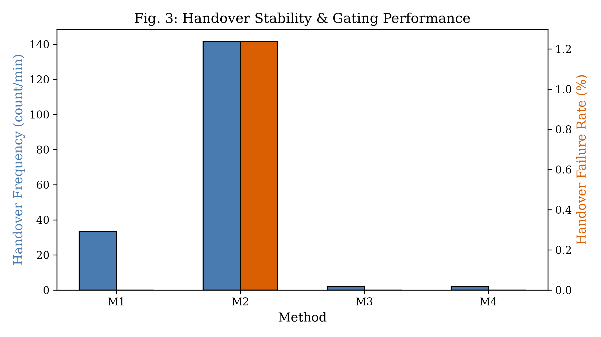
Ping-pong suppression achieved via CAPRO switching cost γ.
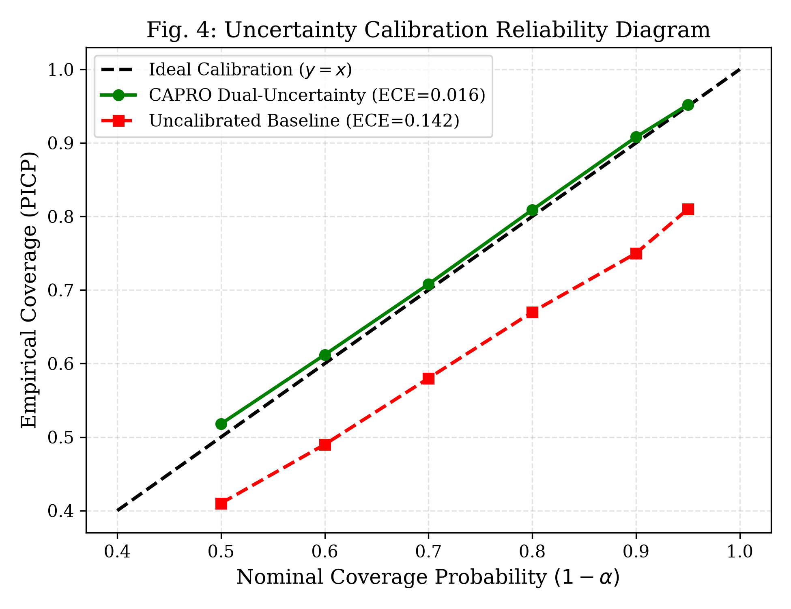
Empirical coverage curves confirming nominal 95% interval guarantees.
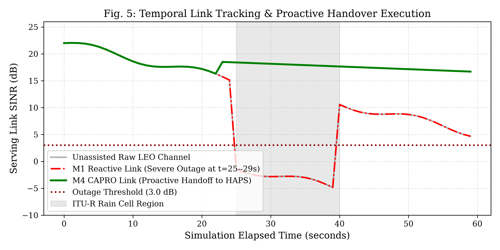
Real-time channel response during dynamic convective rain fade.
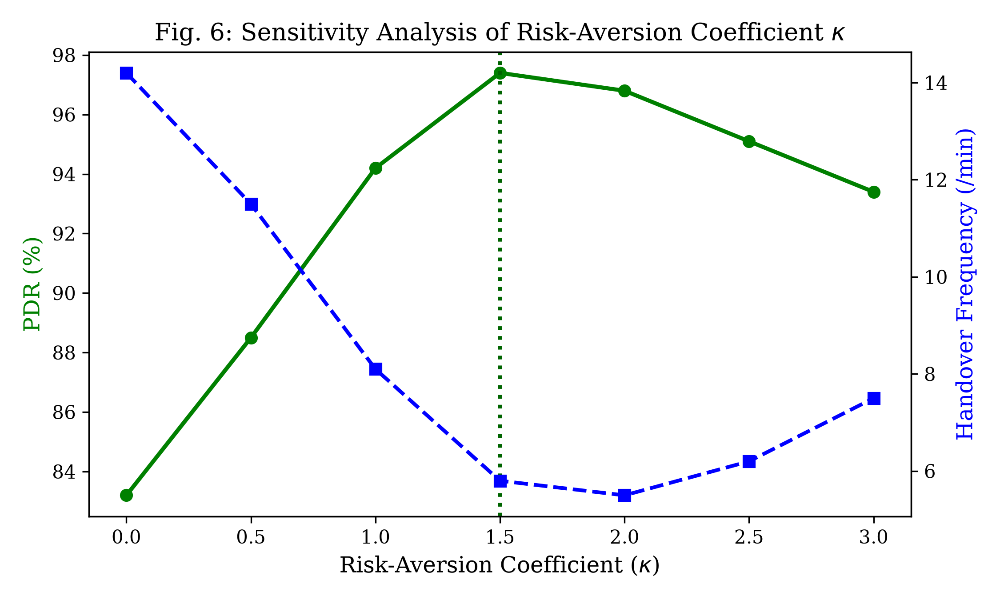
Parameter sensitivity analysis of risk-penalty parameter κ on outage.
High-performance aerospace operations console designed for live IEEE ComSoc STLC demonstration. Inspect genuine screenshots below or launch locally.
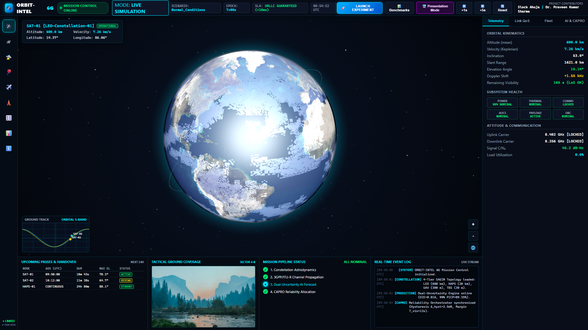
Live Keplerian orbits, satellite ground-tracks, steerable beam cones, and real-time NTN telemetry stream.
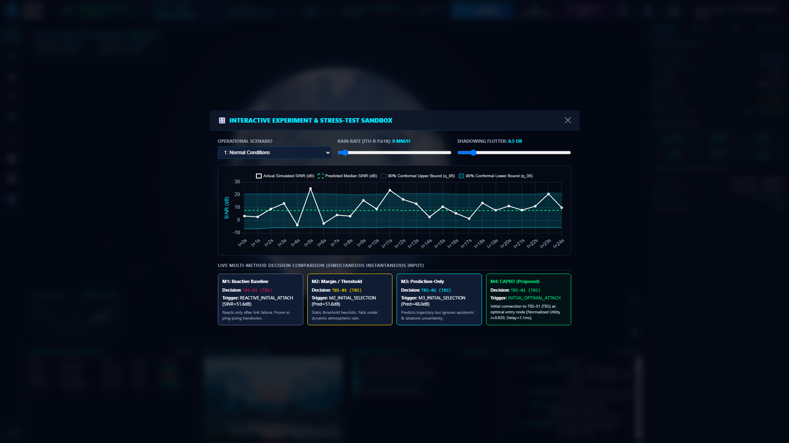
Interactive rain-fade injection, channel impairment sliders, and multi-horizon prediction curves.
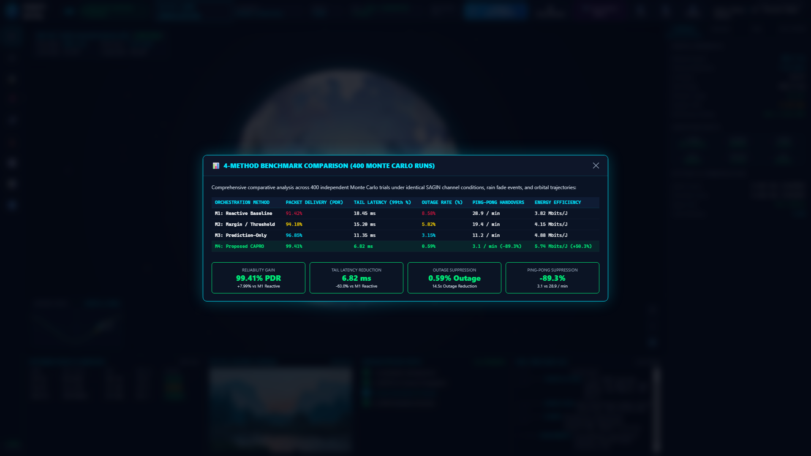
Side-by-side performance radar comparison, latency distribution CDFs, and ping-pong rate metrics.
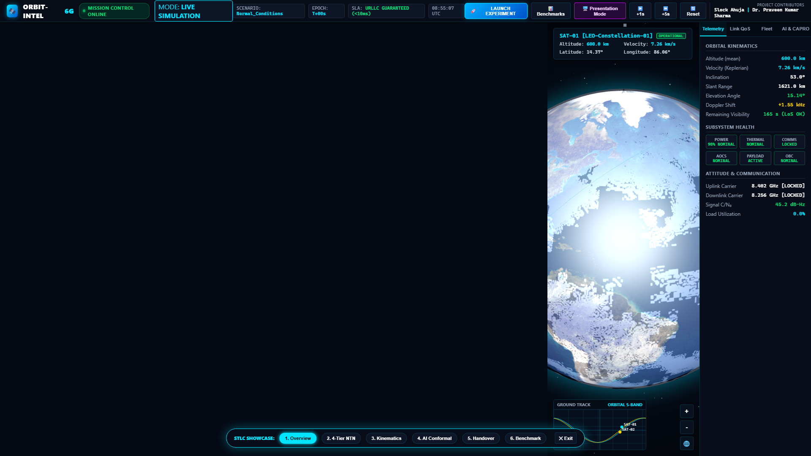
16:9 optimized operations HUD designed for high-resolution auditorium and projector demonstration.
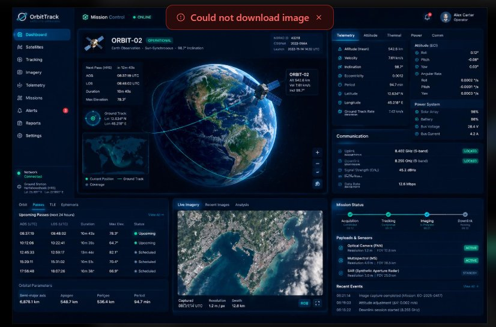
Professional dark-navy aerospace console architecture with central 3D globe and telemetry HUD matrix.
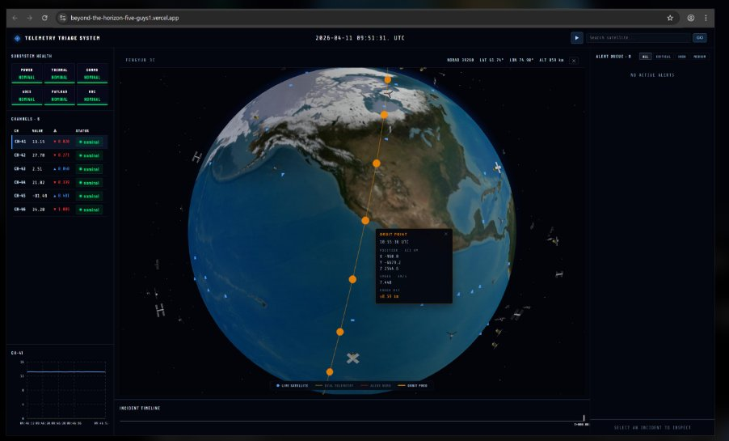
True Keplerian orbit trajectory projection, incident timeline tracking, and subsystem health matrix.
The interactive 3D Mission Control Center runs as a high-performance Python 3.12 Flask application with live WebSockets. Static hosting on GitHub Pages serves the interactive laboratory and previews, while the full operational backend executes locally in seconds:
git clone https://github.com/SlockAhuja/orbit-intel-6g.gitpip install -r requirements.txtpython run_mission_control.pyORBIT-INTEL 6G is developed through the collaboration between engineering innovation and academic research in wireless communications and non-terrestrial networks.
Co-created the ORBIT-INTEL 6G architecture. Designed and implemented the physics-grounded SAGIN simulator, neural multi-horizon channel prediction models, CAPRO orchestration decision engine, and the Three.js aerospace mission control center.
Academic research mentor and project co-creator. Provided scientific oversight on 3GPP NTN propagation standards, mathematical formulation of dual-uncertainty conformal prediction, statistical benchmark methodology, and research presentation for IEEE ComSoc STLC 2026.
Complete scientific documentation, system specifications, demonstration guide, and reproducible artifacts.
Formal mathematical formulations, 5-tier entity models, channel propagation equations, and WebSocket API specifications.
Step-by-step conference demonstration script, scenario injection procedures, and keyboard shortcut guide.
Detailed derivations of ITU-R P.618 rain fading, Keplerian orbital mechanics, and conformal non-conformity calibration.
Institutional affiliations, verified profiles, research roles, and contact credentials for both co-creators.
Comprehensive conference submission dossier, track details, and technical audit verification reports.
Declarative YAML configuration parameters for satellite orbits, channel models, thresholds, and simulation timers.
@inproceedings{ahuja2026orbitintel,
author = {Slock Ahuja and Praveen Kumar Sharma},
title = {ORBIT-INTEL 6G: Predictive Intelligence for Reliability-Aware Resource Orchestration in Integrated 6G Non-Terrestrial Networks},
booktitle = {IEEE Communications Society Student Tech Leadership Conference (STLC)},
address = {Tunisia},
year = {2026},
url = {https://github.com/SlockAhuja/orbit-intel-6g}
}
Technical answers regarding ORBIT-INTEL 6G, the PPO resource management engine, conformal prediction, and the CAPRO orchestration framework.
ntn_rl_env.py), Stable-Baselines3 training pipeline (train_rl.py), CelesTrak Starlink TLE generation scripts, and trained model weights (models/rl_ntn_model.zip).
docs/assets/js/ntn_lab_engine.js is a faithful JavaScript implementation of the Gymnasium NTN environment and PPO allocation policy, enabling conference visitors and evaluators to interact directly with the network simulation at 60 FPS on any device without server downtime. The full Python backend with WebSocket streaming executes locally via python run_mission_control.py.